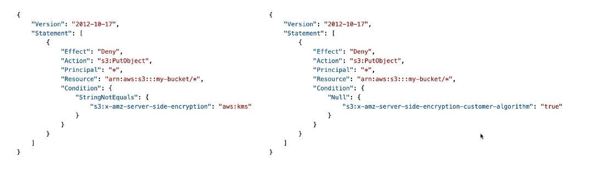
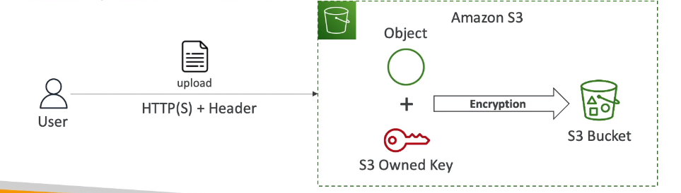
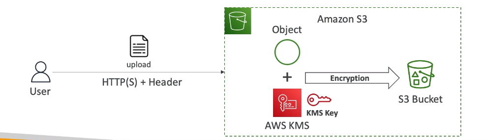
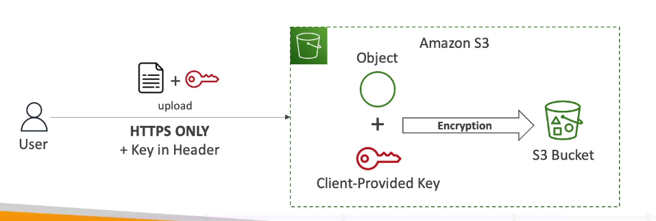
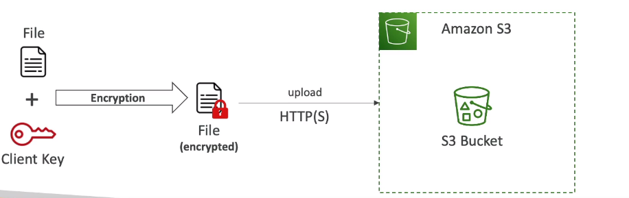
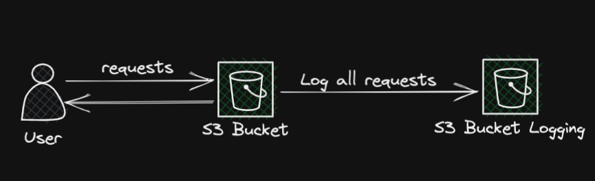
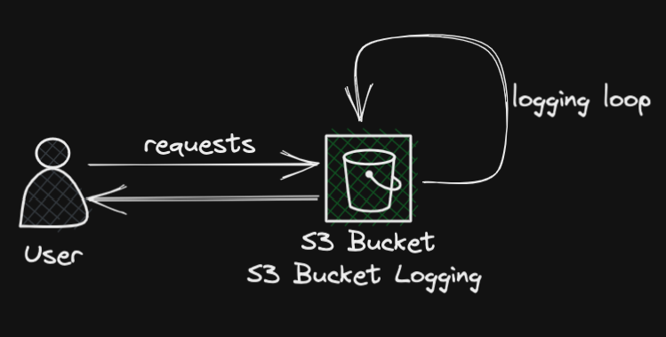
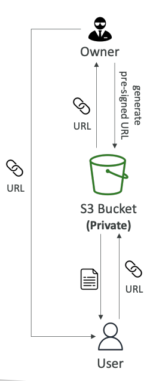
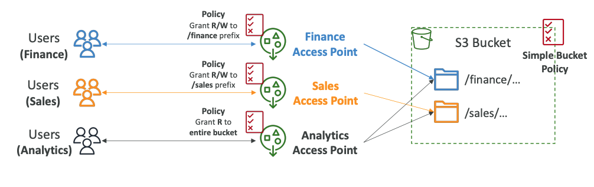
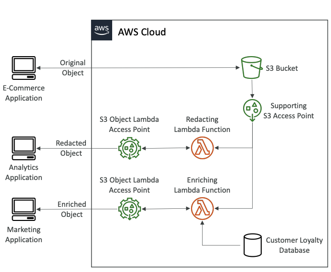

🌿 Object Encryption
-
Bạn có thể mã hóa objects trong S3 buckets bằng4 phương thức sau:
- Server-Side Encryption (SSE)
- Server-Side Encryption with Amazon S3-Managed Keys (SSE-S3) - Enabled by Default
- Mã hóa bằng key được xử lý, quản lý và sở hữu của AWS.
- Server-Side Encryption with KMS Keys stored in AWS KMS(SSE-KMS)
- Tận dụng AWS Key Management Service (AWS KMS) để quản lý các keys mã hóa
- Server-Side Encryption with Customer-Provided Keys (SSE-C)
- Khi bạn muốn tự quản lý các keys của mình sở hữu.
- Server-Side Encryption with Amazon S3-Managed Keys (SSE-S3) - Enabled by Default
- Client-Side Encryption
- Server-Side Encryption (SSE)
-
Cần hiểu để vận dụng cho những tình huống xuất hiện trong bài thi.
-
Notes: Bucket Policies được đánh giá trước(ưu tiên hơn) Default Encryption 
-
Chúng ta có thể chỉ định phương thức mã hóa ở trong Bucket Policicy
🍃 SSE - S3
- Mã hóa sử dụng keys được xử lý, quản lý cũng như sở hữu bởi AWS.
- Object được mã hóa ở Server Side
- Loại mã hóa là AES-256
- Phải set header là “x-amz-server-side-encryption”:“AES256”
- Mặc định được bật cho những buckets mới hoặc objects mới 
🍃 SSE - KMS
- Mã hóa sử dụng các keys được xử lý và quản lý bởi AWS KMS(Key Management Service)
- Lợi ích: người dùng control + audit key bằng CloudTrail
- Object mã hóa ở server-side
- Phải set header là “x-amz-server-side-encryption”:“aws:kms”
- Ở cách mã hóa này, không chỉ đòi hỏi người dùng có quyền truy cập vào object mà người dùng còn cần phải có key thì mới giải mã để xem được object.

- Giới hạn:
- Có thể bị ảnh hưởng bởi giới hạn của KMS
- Khi upload, nó sẽ gọi GenerateDataKey KMS API
- Khi download, nó sẽ gọi Decrypt KMS API
- Tùy từng region, mỗi giây có thể gọi được từ 5000-30000 req/s
- Bạn có thể yêu cầu để tăng số lượng request/s trên Service Quotas Console
🍃 SSE - C
- Sử dụng các keys thuộc toàn quyền sở hữu của khách hàng ngoài AWS.
- S3 không lưu trữ các keys mã hóa này
- Phải sử dụng HTTPS
- Key mã hóa cần phải được cung cấp trong Header, với tất cả các request, áp dụng cho cả việc đọc và ghi dữ liệu. 
🍃 Client-Side Encryption
- Người dùng sử dụng các thư viện như Amazon S3 Clien-Side Encryption Library để lưu keys mã hóa.
- Client tự phải mã hóa dữ liệu trước khi gửi lên S3 lưu trữ.
- Client tự phải giải mã dữ liệu khi truy xuất từ S3
- Client toàn quyền quản lý các keys cung như encryption cycle.

🌿 CORS - Cross Origin Resource Sharing
- Origin = scheme(protocol) +host(domain) + port
- Dựa theo cơ chế này để quyết định xem có cho phép một origin khác truy cập vào tài nguyên của một origin không.
- Một request sẽ không được hoàn thành trừ khi origin kia cho phép, sử dụng CORS Hearder(ex: Access-Control-Allow-Origin)
🌿 MFA Delete
- Một phương thức giúp ngăn ngừa sai xót khi lựa chọn xoá hoàn toàn(permanent delete), yêu cầu người dùng nhập thêm bảo mật 2 lớp để xác nhận xoá.
- MFA sẽ được yêu cầu khi:
- Xoá vĩnh viễn một object
- Tắt versioning trên bucket
- MFA sẽ không được yêu cầu khi:
- Bật versioning
- Liệt kê các object đã bị xoá
- Để sử dụng MFA Delete, Phải bật versioning cho bucket
- Chỉ bucket owner(root account) mới có thể bật/tắt MFA Delete
🌿 Access Log
- Tự động lưu lại toàn bộ các requests của tất cả các accounts đến bucket.
- Dùng cho mục đích audit
- Bucket vs bucket set logging phải chung một region 
- Warning
- Không được set logging bucket và bucket tương tác với users là 1, vì nó sẽ dẫn đến tình trạng sinh requests vô hạn đến bucket -> đốt tiền. 
🌿 Pre-Signed URLs

-
Tạo ra pre-signed URLs sử dụng S3 Console, AWS CLI, SDK
-
URL Expiration:
- S3 Console: 1 phút - 720 phút(12 giờ)
- AWS CLI: thiết lập thời gian hết hạn với tham số —expires-in, đơn vị là giây(mặc định là 3,600s, max là 604800s ~ 168 giờ)
-
User nhận pre-signed URL như sẽ kế thừa permission, trong thời gian quy định, cho phép thực hiện GET/PUT với bucket.
-
Ex: như Insta, cho phép xem ảnh một thời gian nhất định.
🌿 Glacier Vault Lock
- Đáp ứng cho những object có mô hình WORM(Write Once Read Many). Ý tưởng là object được ghi vào bucket sẽ không được modify hoặc delete, chỉ đọc được thôi.
🌿 Object Lock
- Cũng dùng cho mô hình WORM
- Chặn việc xoá một version object theo số lần chỉ định(set 2 lần, xoá đến lần thứ 3 mới được)
- Retention mode - Compliance
- Object version không thể bị overwrite hoặc delete bởi bất kỳ user nào, kể cả root user.
- Retension mode không thể bị thay đổi.
- Retention mode - Governance
- Hầu hết user không thể orverwrite hoặc delete một object version hoặc sửa đổi lock settings của nó.
- Một số users có quyền đặc biệt có thể thay đổi retention hoặc xoá object.
- Retention Period
- Bảo vệ object trong một khoảng thời gian cố định, có thể extend.
- Legal Hold
- Bảo vệ object vô thời hạn, không phụ thuộc vào retention period.
- Có thể tự do thêm hoặc xoá bằng cách sử dụng quyền s3:PutObjectLegalHold của IAM
🌿 Access Point
- Một bucket sẽ có nhiều folders, access point sẽ xác định quyền truy cập của từng user đối với từng folder. 
- Mỗi một Access Point có:
- DNS name(Internet Origin hoặc VPC Origin)
- Một access point policy(giống bucket policy)
🌿 S3 Object Lambda
- Sử dụng khi cần format lại dữ liệu trước khi trả về cho người dùng.
- Ví dụ như cần sắp xếp lại theo thứ tự nhất định hay convert tử XML -> JSON, … 
- Lambda hiểu đơn giản là service cho phép chạy code mà không cần có server, phù hợp cho những tác vụ kiểu xử lý dữ liệu trước khi trả về cho người dùng như trên hoặc chạy các tác vụ định kỳ kiểu cuối ngày tổng kết xem hôm nay có bao nhiêu objects mới, …